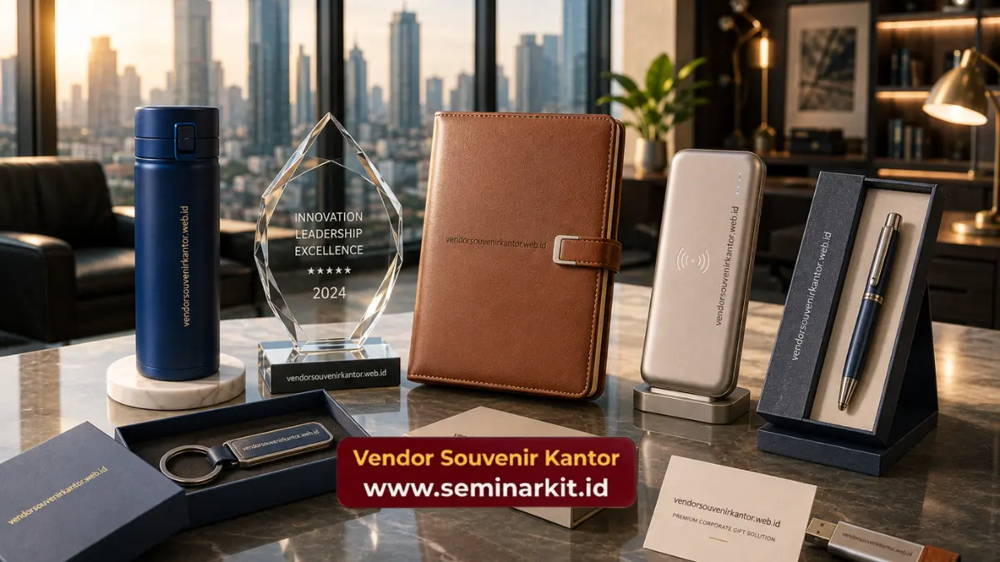

Souvenir kantor premium custom logo adalah proses personalisasi souvenir korporat dengan menambahkan logo, nama perusahaan, atau elemen identitas brand lain pada permukaan produk.
Proses ini umumnya dilakukan melalui teknik emboss, ukir laser, atau cetak UV, tergantung material produk yang digunakan.
Vendor Souvenir Kantor menyediakan layanan custom logo untuk berbagai jenis souvenir premium sesuai kebutuhan branding perusahaan Anda.
- Custom logo pada souvenir premium berfungsi memperkuat identitas brand perusahaan pada setiap produk yang diberikan.
- Teknik personalisasi disesuaikan dengan material, seperti emboss untuk kulit, ukir laser untuk kristal dan kayu, serta cetak UV untuk logam dan plastik.
- Proses custom logo memerlukan tahap desain, persetujuan, hingga produksi sebelum souvenir siap dikirim.
- Kualitas file logo turut memengaruhi hasil akhir personalisasi pada produk.
- Layanan custom logo dapat dikonsultasikan langsung melalui vendor souvenir kantor terpercaya.
Bagaimana Proses Custom Logo pada Souvenir Kantor Premium Dilakukan?
Proses custom logo pada souvenir kantor premium umumnya diawali dengan pengumpulan file logo perusahaan dalam format vektor agar hasil ukiran atau cetakan lebih presisi.
Setelah file diterima, tim desain akan menyesuaikan ukuran dan posisi logo dengan bentuk produk yang dipilih, baik itu permukaan datar seperti sampul agenda maupun permukaan silindris seperti badan tumbler.
Setelah desain disetujui oleh pihak perusahaan, produk akan masuk ke tahap produksi menggunakan teknik personalisasi yang sesuai dengan material.
Tahap ini biasanya diikuti dengan quality control untuk memastikan hasil ukiran atau cetakan logo sesuai dengan desain yang telah disepakati sebelumnya.
Apa Saja Teknik yang Digunakan untuk Custom Logo Souvenir?
Terdapat beberapa teknik personalisasi yang umum digunakan pada souvenir kantor premium, dan pemilihannya sangat bergantung pada jenis material produk.
Teknik emboss umumnya digunakan pada produk berbahan kulit, seperti sampul agenda eksekutif, karena mampu menghasilkan tekstur timbul yang elegan tanpa mengubah warna dasar material.
Teknik ukir laser lebih sering digunakan pada produk berbahan kristal, kayu, atau akrilik, karena mampu menghasilkan detail logo yang presisi meski dalam ukuran kecil.
Sementara teknik cetak UV umumnya digunakan pada permukaan logam atau plastik, karena dapat menghasilkan warna logo yang lebih variatif dibanding teknik ukir.
Berapa Lama Waktu Pengerjaan Custom Logo Souvenir?
Waktu pengerjaan custom logo dapat bervariasi tergantung jenis produk, teknik personalisasi, dan jumlah pesanan. Produk dengan teknik ukir laser pada material keras seperti kristal umumnya memerlukan waktu pengerjaan yang berbeda dibanding produk dengan teknik cetak UV pada permukaan logam.
Untuk memastikan souvenir siap tepat waktu, sebaiknya proses pemesanan dilakukan jauh sebelum tanggal acara perusahaan.

Apa yang Perlu Disiapkan Sebelum Memesan Souvenir Custom Logo?
Sebelum memesan souvenir dengan custom logo, perusahaan sebaiknya menyiapkan file logo dalam format vektor agar kualitas hasil personalisasi tetap optimal, baik untuk teknik emboss, ukir laser, maupun cetak UV.
Selain file logo, perusahaan juga perlu menentukan jenis produk yang akan dipersonalisasi, jumlah unit yang dibutuhkan, serta tenggat waktu acara agar proses produksi dapat direncanakan dengan baik.
Penentuan posisi logo pada produk juga sebaiknya didiskusikan sejak awal, mengingat setiap jenis produk memiliki area permukaan yang berbeda untuk personalisasi.
Diskusi awal ini akan membantu memastikan hasil akhir sesuai dengan ekspektasi identitas brand perusahaan.
Mengapa Proses Revisi Desain Custom Logo Penting Dilakukan?
Sebelum masuk ke tahap produksi massal, proses revisi desain menjadi tahap penting yang sebaiknya tidak dilewatkan.
Pada tahap ini, perusahaan dapat memeriksa kesesuaian ukuran, posisi, serta proporsi logo terhadap keseluruhan produk sebelum dicetak atau diukir dalam jumlah besar.
Revisi desain juga menjadi kesempatan untuk memastikan warna logo, terutama pada teknik cetak UV, sudah sesuai dengan brand guideline perusahaan.
Melewatkan tahap ini berisiko menimbulkan ketidaksesuaian hasil akhir yang baru disadari setelah produk selesai diproduksi dalam jumlah banyak, sehingga proses revisi di awal jauh lebih efisien dibanding melakukan produksi ulang.
Faktor yang Mempengaruhi Kualitas Hasil Custom Logo
Kualitas hasil custom logo dipengaruhi oleh beberapa faktor, termasuk resolusi dan format file logo yang diberikan, kesesuaian teknik personalisasi dengan material produk, serta ketelitian proses produksi.
Logo dengan detail yang terlalu rumit pada produk berukuran kecil terkadang perlu disederhanakan agar hasil ukiran atau cetakan tetap terbaca dengan jelas.
Selain itu, konsistensi warna logo, terutama untuk teknik cetak UV, juga perlu diperhatikan agar hasil akhir sesuai dengan brand guideline perusahaan.
Komunikasi yang jelas antara tim procurement perusahaan dan tim produksi souvenir menjadi kunci utama keberhasilan proses personalisasi ini.
Kesimpulan
Custom logo pada souvenir kantor premium merupakan langkah penting untuk memastikan setiap produk yang diberikan benar-benar merepresentasikan identitas brand perusahaan secara konsisten.
Persiapan file logo yang tepat serta komunikasi yang jelas sejak awal akan menentukan kualitas hasil akhir personalisasi.
Jika perusahaan Anda membutuhkan layanan custom logo untuk souvenir kantor premium, tim Vendor Souvenir Kantor siap membantu proses konsultasi desain hingga produksi.
Kunjungi vendorsouvenirkantor.web.id untuk mendiskusikan kebutuhan custom logo perusahaan Anda.

Banner promosi: klik gambar untuk langsung terhubung ke WhatsApp tim sales.